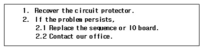
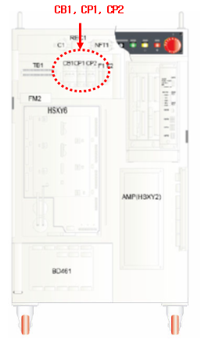
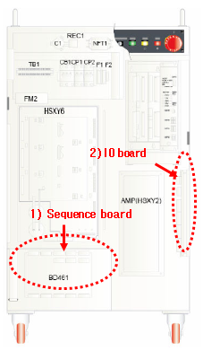

1.1.3.1. Outline
Because of overload, the 220 V circuit protector was disconnected. Recover the circuit protector on top of the controller. If the error persists, replace the sequence board. If the error still exists, contact our office because there is internal short circuit.
1.1.3.2. Causes and checking methods

1. Recover the circuit protector.

2. If the problem persists,
1) Replace the sequence board.
2) Replace the IO board.
3) Contact our office.
